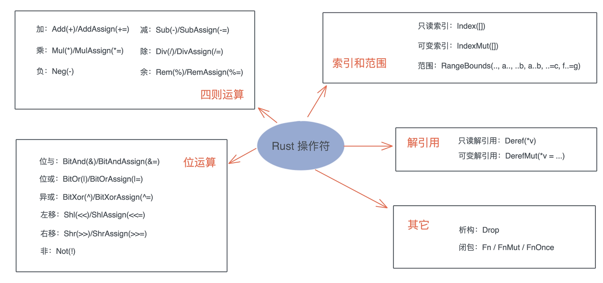
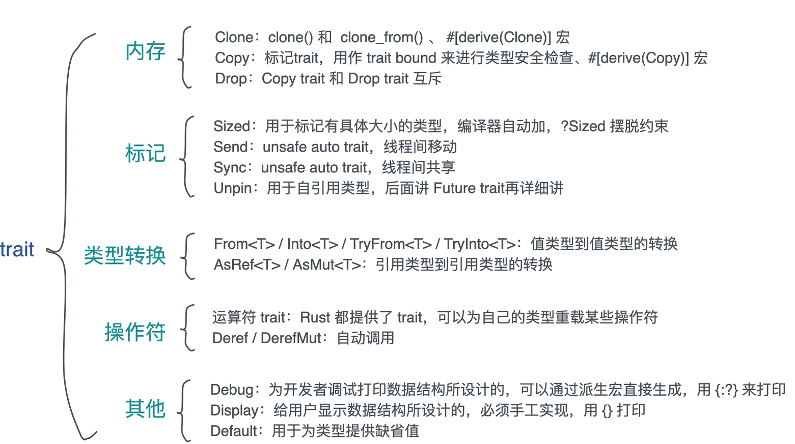

标准 trait
1. 内存相关: Clone/Copy/Drop
1.1 Clone trait
#![allow(unused)]
fn main() {
pub trait Clone {
fn clone(&self) -> Self;
fn clone_from(&mut self, source: &Self) {
*self = source.clone()
}
}
}clone_from方法在实例a已经存在, 在clone过程中会分配内存, 那么用a.clone_from(&b)可以避免内存分配, 提高效率.
Clone trait可以通过派生宏直接实现#[derive(Clone)].
1.2 Copy trait
#![allow(unused)]
fn main() {
pub trait Copy: Clone {}
}这个trait没有任何行为, 但它可以用作 trait bound 来进行类型安全检查, 所以叫 标志trait
Copy trait可以通过派生宏直接实现#[derive(Copy)].
1.3 Drop trait
#![allow(unused)]
fn main() {
pub trait Drop {
fn drop(&mut self);
}
}大部分场景无需为数据结构提供 Drop trait, 系统默认会依次对数据结构的每个域做 drop. 但有两种情况你可能需要手工实现 Drop.
- 希望在数据结束生命周期的时候做一些事情, 比如记日志.
- 需要对资源回收的场景. 编译器并不知道你额外使用了哪些资源, 也就无法帮助你
drop它们. 比如说锁资源的释放, 在MutexGuard中实现了Drop来释放锁资源
注意:
Copy trait和Drop trait是互斥的, 两者不能共存, 当你尝试为同一种数据类型实现Copy时, 同时也实现Drop, 编译器就会报错. 这其实很好理解：**Copy是按位做浅拷贝, 那么它会默认拷贝的数据没有需要释放的资源；而Drop恰恰是为了释放额外的资源而生的. **
2. 标记 trait: Sized/Send/Sync/Unpin
2.1 Sized trait
#![allow(unused)]
fn main() {
pub trait Sized { }
}Sized trait 用于标记有具体大小的类型. 在使用泛型参数时, Rust 编译器会自动为泛型参数加上 Sized 约束.
大部分时候, 我们都希望能自动添加这样的约束, 因为这样定义出的泛型结构, 在编译期, 大小是固定的, 可以作为参数传递给函数.
在少数情况下, 需要 T 是可变类型的 那么需要?Sized 来摆脱这个约束.
#![allow(unused)]
fn main() {
// 这样B就可以是[T]或者str类型,大小都不固定.
// 注意 Borrowed(&'a B) 大小是固定的, 因为它是对B的一个引用, 而且引用的大小是固定的.
pub enum Cow<'a, B: ?Sized + 'a> where B: ToOwned,
{
// 借用的数据
Borrowed(&'a B),
// 拥有的数据
Owned(<B as ToOwned>::Owned),
}
}2.2 Send/Sync
#![allow(unused)]
fn main() {
pub unsafe auto trait Send {}
pub unsafe auto trait Sync {}
}这两个 trait 都是 unsafe auto trait, auto 意味着编译器会在合适的场合, 自动为数据结构添加它们的实现, 而 unsafe 代表实现的这个 trait 可能会违背 Rust 的内存安全准则, 如果开发者手工实现这两个 trait , 要自己为它们的安全性负责.
Send/Sync 是 Rust 并发安全的基础：
- 如果一个类型
T实现了Send trait, 意味着T可以安全地从一个线程移动到另一个线程, 也就是说所有权可以在线程间移动. - 如果一个类型
T实现了Sync trait, 则意味着&T可以安全地在多个线程中共享. 一个类型T满足Sync trait, 当且仅当&T满足Send trait.
对于 Send/Sync 在线程安全中的作用, 可以这么看, **如果一个类型 T: Send, 那么 T 在某个线程中的独占访问是线程安全的；如果一个类型 T: Sync, 那么 T 在线程间的只读共享是安全的. **
对于我们自己定义的数据结构, 如果其内部的所有域都实现了 Send / Sync, 那么这个数据结构会被自动添加 Send / Sync.
标准库中, 不支持 Send / Sync 的数据结构主要有：
- 裸指针
*const T/*mut T. 它们是不安全的, 所以既不是Send也不是Sync. UnsafeCell不支持Sync. 也就是说, 任何使用了Cell或者RefCell的数据结构不支持Sync.- 引用计数
Rc不支持Send也不支持Sync. 所以Rc无法跨线程.
2.3 Unpin
todo.
3. 类型转换: From/Into/AsRef/AsMut
3.1 From / Into 和 TryFrom / TryInto
#![allow(unused)]
fn main() {
pub trait From<T> {
fn from(T) -> Self;
}
pub trait Into<T> {
fn into(self) -> T;
}
// 实现 From 会自动实现 Into
impl<T, U> Into<U> for T where U: From<T> {
fn into(self) -> U {
U::from(self)
}
}
// From(Into)是自反的
// 把类型 T 的值转换成类型 T, 会直接返回
impl<T> From<T> for T {
fn from(t: T) -> T {
t
}
}
}From<T> 可以根据上下文做类型推导, 使用场景更多；而且实现了 From<T> 会自动实现 Into<T>, 反之不会. 所以需要的时候, 只要实现 From<T> 即可.
而且From<T>(Into<T>)是自反的, 把类型 T 的值转换成类型 T, 会直接返回, 这样在接口设计时变得灵活, 比如函数接受一个IpAddr为参数, 我们可以使用Into<IpAddr>让更多的类型被这个函数使用.
#![allow(unused)]
fn main() {
use std::net::IpAddr;
fn print(v: impl Into<IpAddr>) {
println!("{:?}", v.into());
}
}合理地使用From<T> / Into<T>, 可以让代码变得简洁, 符合 Rust 可读性强的风格, 更符合开闭原则.
注意, 如果你的数据类型在转换过程中有可能出现错误, 可以使用 TryFrom<T> 和 TryInto<T>, 用法与From<T>/ Into<T> 一样
#![allow(unused)]
fn main() {
pub trait TryFrom<T> {
type Error;
fn try_from(value: T) -> Result<Self, Self::Error>;
}
pub trait TryInto<T> {
type Error;
fn try_into(self) -> Result<T, Self::Error>;
}
}3.2 AsRef / AsMut
AsRef<T> 和 AsMut<T> 就很好理解了, 用于从引用到引用的转换.
在 trait 的定义上, 都允许 T 使用大小可变的类型, 如 str、[u8] 等. AsMut<t> 除了使用可变引用生成可变引用外, 其它都和 AsRef<T> 一样.
注意, 如果你的代码出现 v.as_ref().clone() 这样的语句, 也就是说你要对 v 进行引用转换, 然后又得到了拥有所有权的值, 那么你应该实现 From<T>, 然后做 v.into().
#![allow(unused)]
fn main() {
pub trait AsRef<T> where T: ?Sized {
fn as_ref(&self) -> &T;
}
pub trait AsMut<T> where T: ?Sized {
fn as_mut(&mut self) -> &mut T;
}
}4. Deref / DerefMut
#![allow(unused)]
fn main() {
pub trait Deref {
// 解引用出来的结果类型
type Target: ?Sized;
fn deref(&self) -> &Self::Target;
}
pub trait DerefMut: Deref {
fn deref_mut(&mut self) -> &mut Self::Target;
}
}
5. Debug / Display / Default
#![allow(unused)]
fn main() {
pub trait Debug {
fn fmt(&self, f: &mut Formatter<'_>) -> Result<(), Error>;
}
pub trait Display {
fn fmt(&self, f: &mut Formatter<'_>) -> Result<(), Error>;
}
pub trait Default {
fn default() -> Self;
}
}Debug 和 Display 两个 trait 的签名一样, 都接受一个 &self 和一个 &mut Formatter.
Debug是为开发者调试打印数据结构所设计的, 可以通过派生宏直接生成.通过{:?}来打印.Display是给用户显示数据结构所设计的, 必须手工实现.通过{}打印.
Default trait 用于为类型提供缺省值. 它也可以通过 derive 宏 #[derive(Default)] 来生成实现, 前提是类型中的每个字段都实现了 Default trait.
总结
